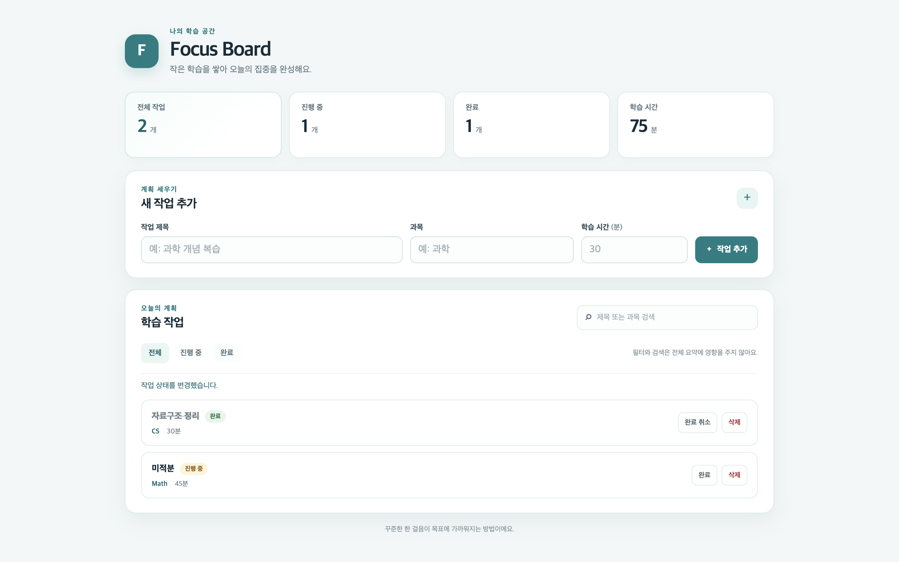

0/ 1
부분 작업 · 미진입01 / RESULT
추가 개선 필요이번 실행의 결론
17분 33.0초
이전 대비 42.7% 감소최소 111,189
1회 사용량 미보고 · 하한값미실행
자동 완료와 별도 지표실제 부분 작업 진행
미진입
QA 계획 단계에서 종료되어 구현·통합 검증에 진입하지 못했습니다.
02 / COMPARISON
변경 전·후, 같은 과제로
동일 프롬프트·공통 QA·확장 예산·6회차·45분 관찰 한도. 각 버전 1회 실측입니다.
| 비교 항목 | 이전 확장 실행 | 입력 계약 개선 후 |
|---|---|---|
| 자동 완료·반영 | 회차 한도 · 자동 반영 0/1 | 실패 · 자동 반영 0/1 |
| 전체 실행 시간 | 30분 37.1초 | 17분 33.0초 |
| 보고된 토큰 | 1,546,478 | 최소 111,189 |
| 실제 모델 호출 / 사용량 미보고 | 53회 / 0회 | 8회 / 1회 |
| 부분 작업 완료 | 2/3 | 미진입 |
| 자체 브라우저 QA · 마지막 결과 | 62/66 | 미실행 |
| README 실제 실행 · 마지막 결과 | 실패 · 0/0 | 미실행 |
| 동일 독립 브라우저 QA | 50/50 | 미실행 |
| 생성 프로젝트 Node 테스트 | 22/22 | 미실행 |
| 첫 구현까지 시간 | 17분 25.5초 | 미도달 |
| 첫 구현 전 준비 토큰 | 618,054 | 미확인 |
| 실행 중 수동 코드 수정 / 수동 재개 | 0회 / 0회 | 0회 / 0회 |
| 45분 관찰 한도에 따른 중지 | 0회 | 0회 |
두 버전 모두 연결·잔여 사용량·누적 선택 기록은 실행 시점의 앱 상태를 사용했습니다. 모델 응답 변동, 실제 선택 모델, README 실행 경로 수정도 영향을 줄 수 있으므로 시간·토큰 차이 전체를 입력 계약 변경만의 효과로 단정하지 않습니다. 단일 모델은 이번 회차에서 재실행하지 않았습니다.
판정 근거와 비교의 한계
엔진 종료 근거
기본 모델과 저장된 대체 모델 3개를 모두 시도했지만 응답 형식이 올바르지 않습니다. 독립 QA 계획 오류: required-title-focus: 입력 검사에는 실제 입력 이후의 assertion이 필요합니다.
- Gemini의 프로젝트 준비와 계획은 통과했지만 QA 계획 호출에서 연결 오류가 발생했습니다. 이 호출은 사용량이 보고되지 않아 토큰 합계는 하한값입니다.
- GPT-6-Astra high는 835.696초 후 JSON 응답 형식 오류로 거부됐습니다. 첫 텍스트 응답은 356.874초로 기록됐습니다. 최종 원문이 보존되지 않아 모델 자체의 문제인지 수신 결과 구성의 문제인지는 확정하지 못했습니다.
- GPT-6-Sol high는 required-title-focus 검사에 실제 키 입력 뒤 assertion이 없다는 이유로 거부됐습니다. GPT-6-Luna high는 같은 검사 ID에 실제 입력 뒤 assertion이 없다는 이유로 거부됐습니다. 두 오류는 JSON 문법 오류가 아니라 QA 동작 근거의 유효성 오류입니다.
- 실제 대체 모델 전환은 Gemini → Astra → Sol → Luna 순서로 진행됐습니다. 수동 재개나 생성 코드 수정은 하지 않았습니다.
- 화면과 테스트 파일이 생성되지 않았으므로 독립 브라우저 QA와 생성 프로젝트 Node 검사는 미실행입니다. 검사 0/50 실패 또는 통과로 해석하지 않습니다.
- 이전 실행보다 일찍 종료됐지만 구현을 시작하지 못했으므로 시간·토큰 효율이 개선됐다고 해석할 수 없습니다. 입력 길이 충돌 수정의 전체 자동 완료 효과도 이번 실측으로 확인하지 못했습니다.
- 실측 종료 후 분류별 필수 동작 안내와 복수 누락 진단을 추가했습니다. 이 후속 수정은 별도 회귀 검증 결과이며 이번 실측 수치에 소급 반영하지 않았습니다.
실험 준비와 제품 수정은 이 실행 밖에서 진행했습니다. 실행 중 생성 코드 수동 수정 0회, 수동 이어가기 0회, 관찰 한도 중지 0회입니다. 이 수치에 제품 개발 공수와 보고서 작성 시간은 포함되지 않습니다. 개입 0회가 자동 성공을 의미하지 않으며 미완료 결과는 그대로 기록합니다.
03 / OUTPUT
실제 산출물을 직접 확인
공통 독립 QA의 데스크톱·모바일 화면입니다. 이미지와 링크를 눌러 원본을 볼 수 있습니다.



화면이 생성되지 않아 브라우저 QA를 실행하지 못했습니다.
04 / MODEL USAGE
역할별 모델과 토큰
사용량이 보고된 실제 호출만 합산했습니다.
계획
6회 · 91.8%102,122보고 토큰
구현
0회 · 0.0%0보고 토큰
판정
2회 · 8.2%9,067보고 토큰
모델·Effort별 상세 사용량
| 역할 · 모델 · Effort | 호출 | 보고 토큰 | 입력 / 출력 | 캐시 입력 | 호출 시간 합 |
|---|---|---|---|---|---|
| judge · jev-latest · default | 2 | 9,067 | 8,905 / 162 2/2회 제공 | 미제공 | 0분 0.9초 |
| planner · models/gemini-3-flash-preview · default | 3 | 6,545 1회 미보고 | 2,839 / 2,370 2/3회 제공 | 미제공 | 1분 16.3초 |
| planner · gpt-6-astra · high | 1 | 34,006 | 26,881 / 7,125 1/1회 제공 | 26,240 1/1회 제공 | 13분 55.7초 |
| planner · gpt-6-sol · high | 1 | 33,176 | 25,942 / 7,234 1/1회 제공 | 0 1/1회 제공 | 1분 51.0초 |
| planner · gpt-6-luna · high | 1 | 28,395 | 25,774 / 2,621 1/1회 제공 | 0 1/1회 제공 | 0분 28.2초 |
캐시 입력은 전체 토큰에 다시 더하지 않습니다. 모델마다 토큰 정의와 보고 범위가 다를 수 있습니다. 실행별 청구 금액 근거가 없어 달러 비용은 추정하지 않았습니다.
05 / IMPLEMENTATION
확인된 원인을 좁게 수정
브라우저 입력과 오류 메시지 요구가 충돌하던 문제를 다뤘습니다.
원인
브라우저에서 입력이 잘림
이전 생성 화면은 제목·과목을 maxlength로 제한했습니다. QA가 제한을 넘는 문자를 넣어도 실제 입력값은 잘려, 애플리케이션의 초과 오류가 나타날 수 없었습니다.
수정
계약 전달과 실패 근거 보강
계획·구현·판정에 실제 입력 동작과 요구사항을 전달합니다. 실패하면 요청 길이·실제 길이·maxlength·입력 유형을 모델에 보여 줍니다. 입력값을 강제로 바꾸거나 검사 기준을 낮추지 않았습니다.
382/382전체 제품 회귀 검사
2/2입력 계약 대상 검사
3/3패키지 소스 해시 일치
수정 파일·책임·검증 범위
browser-qa.mjs: 모델에 전달할 실제 브라우저 입력 계약.harness-engine.mjs: 계획·구현 프롬프트에 입력 계약 연결.desktop/browser-qa.mjs: 실패 시 입력 전달 차이를 수집해 진단 근거에 추가.tests/browser-input-qa.test.mjs: 실제 Chromium에서 maxlength 4에 5자 입력 → 진단, 유효 경계 4자 → 통과, fixture 구현 수정 후 동일 검사 10/10 통과.tests/browser-qa.test.mjs: 계획·구현 모델이 계약을 받는지 검사.
58991ac fix: 브라우저 입력 제약과 QA 오류 계약의 충돌 예방c21de18 test: 실제 Chromium 입력 경계와 실패 진단 검증
패키징 성공 후 앱을 정상 재시작했습니다. 실제 실행 도중 제품·생성 코드·검사 기준을 변경하지 않았습니다.
실측 후 보완
QA 분류와 실제 동작 일치
빈 입력도 fill(value:"")로 명시하고, 키보드 검사는 실제 press 이후 결과를 확인하도록 안내합니다. 같은 검사에서 빠진 분류별 동작을 함께 진단합니다. 다른 검사의 동작으로 현재 검사의 근거를 대신할 수 없습니다.
후속 회귀 검증
383/383 통과
분류 진단 대상 검사 2/2 통과. 실제 모델 전체 재실측은 이 후속 수정 후에 다시 진행하지 않았습니다. 위 실측은 수정 전의 실패 기록을 유지합니다.
e42505d 구현 · 97a47af 테스트
06 / NEXT CYCLE
매일 오전 9시 등록지속 실측과 다음 우선순위
이 대화에 연결된 일일 자동화를 활성화했습니다. 기존 실행이 있으면 결과 수집부터 이어가고, 근거가 확인된 문제 한 가지를 수정한 뒤 같은 조건으로 다시 측정합니다. 인증·구조·저장·동시성 등 승인 대상 변경은 구체적인 제안으로 보고합니다.
- 후속 수정이 포함된 앱에서 같은 실험을 다시 실행해 QA 준비를 통과하고 첫 구현에 진입하는지 먼저 확인합니다. 해당 재실측은 일일 자동화의 다음 회차로 이어갑니다.
- QA 계획의 한 번에 출력하는 양과 응답 유효성을 측정해, 준비 단계에서 장시간 응답을 기다리는 비용을 줄일 수 있는지 판단합니다. 시간 제한을 단순히 늘려 해결하지 않습니다.
- Astra의 JSON 형식 오류는 원문 근거가 부족합니다. 최종 응답의 완결성·메시지 조합 상태를 비밀값을 남기지 않는 범위에서 진단할 방법을 우선 검토합니다.
- 전체 자동 완료가 안정적으로 나온 뒤 동일 버전의 단일 모델 비교를 반복합니다. 작업별 성공률·복구 횟수·준비 시간·토큰을 함께 축적해 모델 선택 근거로 사용합니다.
로컬 앱과 연결 계정을 사용할 수 있어야 실제 측정이 가능합니다. 연결 불가·사용량 한도·검사 미실행도 그대로 남깁니다. 이전 실행 자료는 보존하며 GitHub에는 게시하지 않습니다.